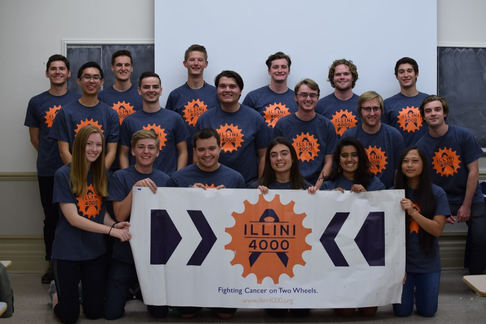

That's me in the picture. I'm sorry about the creepy kid in the back.
----- ----- -----
I am currently an undergraduate student at UIUC studying Electrical Engineering! I am interested in pursuing a career path in Aerospace, such as satelites, robotic equipment, and more. I also very much enjoy Mechanical design, and wish to combine this with Electrical design in my future.
While Engineering is my passion, I also love biking, playing video games, collecting cool stuff, and building/launching model rockets. I also enjoy 3D Printing and designing models using CAD.
----- ----- -----
Teamwork Makes the Dream Work
----- ----- -----
High School
Go Quince Orchard Cougars!
Quince Orchard Engineering and Robotics Club (QOERC): QOERC partakes in the First Tech Challenge, which is an annual competiton where young engineers must construct robots to solve various problems, document progress with Engineering Notebooks, and inspire others with outreach events. I was the 3D Printer manager for two years, and Vice President for one. I now serve as a Mentor - I provide advice, support, and guidance for the club. This is currently my fifth year with the club.
QOERC 2016-2017 team at the Georgetown Qualifier.
QOERC 2019-2020 team at the Annapolis Qualifier.
Orbital Solutions: Led by myself and another friend, Orbital Solutions comprised of 10 "junior" engineers who were excited to learn more about robotics. We competed in the First Lego League, which is an annual competition where teams build LEGO robots to complete tasks autonomously. This was a great learning experience for me in leadership and how to work with a younger audience.
Orbital Solutions 2018-2019 team at the Shady Grove Qualifier.
College
Go Fighting Illini!
Illini 4000: An organization dedicated to fighting cancer on two wheels. Teams annually complete cross-country bike trips to advocate cancer research and services by interviewing those who have been affected by cancer - a project called the Portraits Project. Furthermore, each rider is required to fundraise at least $4,000 to be donated to cancer related organizations. I will be the Logistics Officer for the 2021 Team, in which I will help in route planning, stayovers, and more. I will be making the trek with the 2021 Team!
While the 2020 trip has been cancelled, the 2020 team has fundraised over $50,000, and we are still taking donations! Please donate here. Please make sure to choose Willard Sullivan as the rider you are donating to in the 4. Additional Information section.

Illini 4000 Bike America Team 2020.
Illini Solar Car: A massive student led project that "designs, builds, and races solar electric race cars in international competitions." I am currently a designer on the Mechanical Team, in which I was tasked with designing the Trailing Edge of the car, which will house the rear lights. I have learned Creo (a CAD software), teamwork, and other skills. I am looking forward to combining my interest in Mechanical and Electrical design even more in the future with Illini Solar Car.